When disconnecting a high-pressure fuel line, a large amount of gasoline may spray out, so follow the procedure below.
Perform the fuel spill prevention procedure. (see
 )
)Remove the tube joint clip.
Disconnect the fuel tube.
Drain the fuel remaining in the fuel tube.
Cover the disconnected fuel tube with a plastic bag.
- □ HINT □
- Do not damage the fuel tube or allow foreign matter to enter the tube.
Place a container under the fuel tube connection.
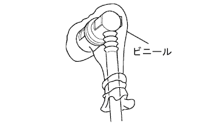 |
Observe the following precautions when removing and installing the injectors.
Never reuse the O-rings.
When installing a new O-ring to the injector, never damage it.
Before installation, apply spindle oil or gasoline to the new O-ring.
- ■ NOTICE ■
- Never use engine oil, gear oil or brake fluid.
Install the injectors to the delivery pipe and cylinder head as shown in the illustration. Before installing the injectors, be sure to apply gasoline or spindle oil to the places where the delivery pipe contacts the injector O-rings.
- ■ NOTICE ■
- Do not reuse the insulators.
 |
 |
Observe the following precautions when removing the fuel tube connector (quick type A).
Disengage the claws and remove the fuel pipe clamp.
Before disconnecting the fuel tube connector, check for mud or other dirt on the fuel tube connector and pipe, and clean them if dirty.
Pinch the retainer from both sides by hand as shown in the illustration, and pull the fuel tube connector out of the pipe.
- ■ NOTICE ■
- Never use tools.
If the fuel tube connector and pipe are stuck, pinch the pipe and push and pull the fuel tube connector to release it, then disconnect the fuel tube connector.
- ■ NOTICE ■
- Never use tools.
After disconnecting the fuel tube, check for mud or other dirt on the seal surface of the pipe, and clean it if dirty.
Protect the disconnected fuel tube connector and pipe with plastic bags.
- ■ NOTICE ■
- Do not damage the fuel tube connector or pipe, or allow foreign matter to enter the pipe.
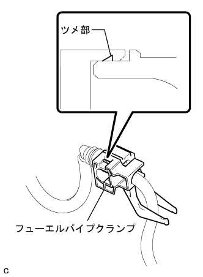 |
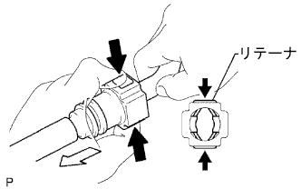 |
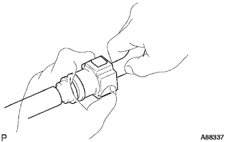 |
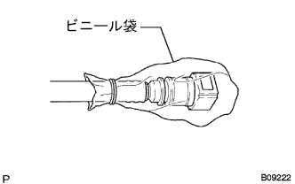 |
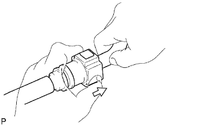 |
Observe the following precautions when connecting the fuel tube connector (quick type A).
Align the axis of the fuel tube connector with the axis of the pipe and push in the fuel tube connector until the retainer makes a "click" sound.
After connecting the fuel tube connector, pull on the fuel tube connector and pipe to check that they are securely connected.
Connect the fuel pipe clamp.
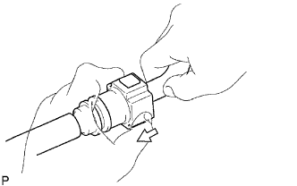 |
Observe the following precautions when removing the fuel tube connector (type B).
Before disconnecting the fuel tube connector, check for mud or other dirt on the fuel tube connector and pipe, and clean them if dirty.
As shown in the illustration, disengage the 2 claws of the fuel tube connector retainer, push down the retainer, and disconnect the fuel tube connector from the pipe.
- ■ NOTICE ■
- Never use tools.
If the fuel tube connector and pipe are stuck, pinch the pipe and push and pull the fuel tube connector to release it, then disconnect the fuel tube connector.
- ■ NOTICE ■
- Never use tools.
After disconnecting the fuel tube, check for mud or other dirt on the seal surface of the pipe, and clean it if dirty.
Protect the disconnected fuel tube connector and pipe with plastic bags.
- ■ NOTICE ■
- Do not damage the fuel tube connector or pipe, or allow foreign matter to enter the pipe.
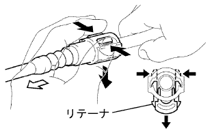 |
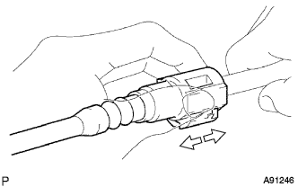 |
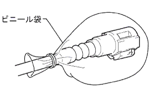 |
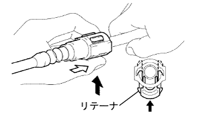 |
Observe the following precautions when connecting the fuel tube connector (type B).
Align the axis of the fuel tube connector with the axis of the pipe, push in the fuel tube connector and push up the retainer.
After connecting the fuel tube connector, pull on the fuel tube connector and pipe to check that they are securely connected.
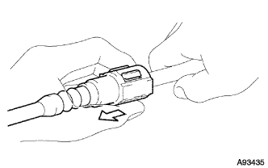 |